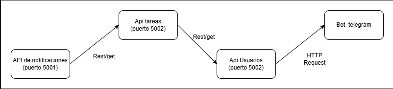

El Servicio de Tareas rechaza la solicitud con error 401 (no autorizado) y no permite la operación
Interacción 2
Servicio de Tareas
Servicio de Notificaciones
Evento "tarea_asignada" fecha límite
La tarea se guarda igual; la notificación se reintenta luego (no bloquea el flujo principal)
Interacción 3
Servicio de Tareas
Servicio de Reportes / Dashboard
Evento "tarea_completada"
Los reportes quedan desactualizados temporalmente; el sistema de tareas sigue operando con normalidad
🪜 2. REST o Eventos
Interacción
REST
Evento
¿Por qué?
1 · Usuarios Tareas
✓
Se necesita respuesta inmediata para saber si el usuario tiene permiso antes de continuar con la operación.
2 · Tareas Notificaciones
✓
La notificación no es crítica para guardar la tarea. Con un evento se desacopla el servicio y un fallo en notificaciones no afecta el guardado.
3 · Tareas Reportes
✓
Los reportes se actualizan en segundo plano. No es necesario esperar confirmación del servicio de reportes para considerar la tarea completada.
🪜 3. Síncrono o Asíncrono
Interacción
Síncrono
Asíncrono
Justificación
1 · Validación de usuario
✓
El servicio de tareas debe esperar la respuesta del servicio de autenticación para saber si puede procesar o rechazar la solicitud.
2 · Notificación de tarea asignada
✓
El usuario recibe confirmación de asignación de inmediato. El envío de la notificación ocurre en segundo plano sin bloquear al cliente.
3 · Actualización de reportes
✓
Los dashboards se actualizan eventualmente. No es necesario esperar; el usuario ya recibió confirmación de que la tarea fue completada.
🪜 4. Eventos Importantes del Sistema
1️⃣ tarea_creada — Se emite cuando un usuario crea una nueva tarea. Contiene: ID de tarea, título, proyecto, usuario creador y fecha límite. Lo consumen: Notificaciones y Reportes.
2️⃣ tarea_asignada — Se emite cuando una tarea es asignada a un usuario. Contiene: ID de tarea, ID del usuario asignado y prioridad. Lo consume: Notificaciones (para avisar al usuario asignado).
3️⃣ tarea_completada — Se emite cuando un usuario marca una tarea como completada. Contiene: ID de tarea, ID de usuario, timestamp y proyecto. Lo consumen: Reportes/Dashboard y Notificaciones.
🪜 5. Análisis de Fallos
Servicio de Usuarios / Autenticación
Ningún usuario podría autenticarse. El Servicio de Tareas rechazaría todas las operaciones (crear, editar, completar), bloqueando completamente la aplicación.
Continuar parcialmente: operaciones de lectura con sesión en caché pueden mantenerse. Las operaciones que requieran nueva autenticación deben detenerse por seguridad.
Implementar Circuit Breaker para detectar fallos. Usar caché de tokens JWT válidos para peticiones recientes. Tener instancias redundantes (réplicas) del servicio de autenticación con balanceo de carga.
🪜 6. Service Discovery
Todos los servicios que apuntan a esa IP fija dejarían de comunicarse. Por ejemplo, si el Servicio de Tareas tiene hardcodeada la IP del Servicio de Notificaciones y esta cambia, las notificaciones dejan de enviarse aunque el servicio esté funcionando.
Con un Service Discovery (como Consul o Eureka), cada servicio se registra automáticamente al iniciarse con su nombre y dirección actual. Cuando Tareas necesita contactar a Notificaciones, consulta el registro para obtener la dirección actualizada.
Permite que los servicios escalen horizontalmente, se reinicien o cambien de IP sin romper la comunicación. El sistema es más resiliente y no requiere configuración manual de direcciones.
Entre todos los servicios: API Gateway → Usuarios, API Gateway → Tareas, y Tareas → Notificaciones. Especialmente útil en despliegue con contenedores (Docker/Kubernetes) donde las IPs cambian constantemente.
🪜 7. Mini Diagrama
Dibujen:
Servicio A → Service Discovery → Servicio B

[1] Notificaciones se registra en Discovery al iniciar con su IP actual.
[2] Tareas consulta al Discovery: "¿dónde está Notificaciones?"
[3] Discovery responde con la IP/puerto actual.
[4] Tareas se comunica directamente con Notificaciones usando esa dirección.
💡 Ayuda rápida
REST → petición directa
Evento → algo ocurrió
Síncrono → espera respuesta
Asíncrono → continúa sin esperar
Service Discovery → permite encontrar servicios automáticamente